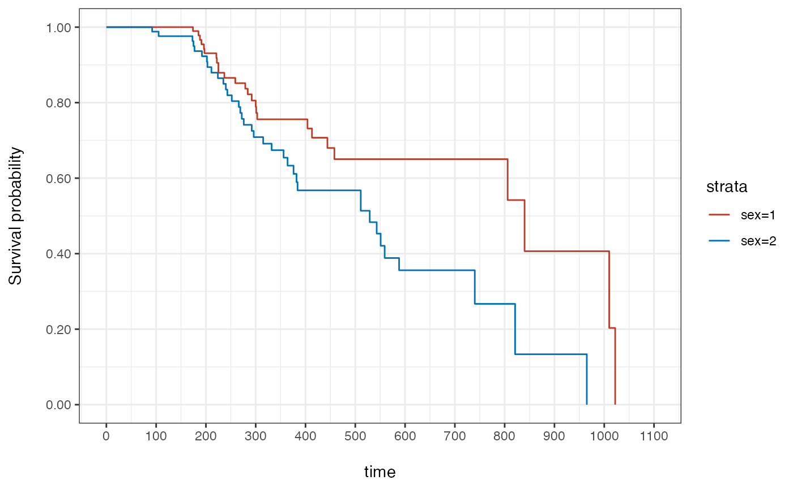
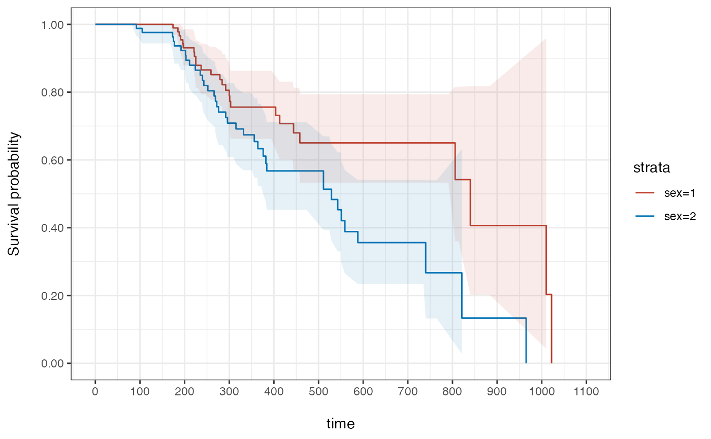
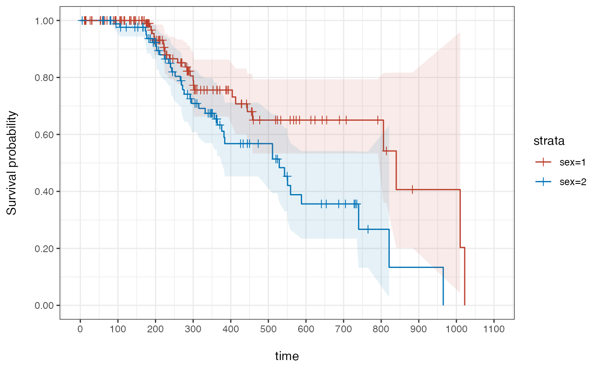

Introduction
This short tutorial illustrates a typical use case in clinical development - the analysis of time to a certain event (e.g., death) in different populations. Typically, data obtained in randomized clinical trials (RCT) can be used to estimate the overall survival of patients in one group (e.g., treated with drug X) vs another group (e.g., treated with drug Y) and thus determine if there is a difference between these treatments.
For a more thorough introduction to Survival Analysis, we recommend the following tutorial: https://bioconnector.github.io/workshops/r-survival.html
In this example, we will work with patient data from NCCTG Lung Cancer dataset that is part of the survival package. Another vignette presents an example using a data set following the CDISC ADaM standard.
Global Document Setup
# Constants
DATASET <- paste0("NCCTG Lung Cancer Dataset (from survival package ",
packageVersion("survival"), ")")
# Globql formatting options
options(digits = 3)
# Global ggplot settings
# theme_set(theme_classic())
# Global table settings
options(DT.options = list(pageLength = 10,
language = list(search = 'Filter:'),
scrollX = TRUE))
lung_cohort <- survival::lung
#data(lung_cohort)Creating and rendering tables
Visualizing tables, like the tableone or risktables, is a two-step process in visR . First, a data.frame (or tibble) is created by a get_XXX() function (e.g. get_tableone()). Secondly, the data.frame can be displayed by calling the function render(). The advantage of this process is that data summaries can be created, used and adjusted throughout an analysis, while at every step data summaries can be displayed or even be downloaded.
Cohort Overview (Tableone)
Populations are usually displayed as a so-called tableone. Function get_tableone creates a tibble that includes populations summaries.
tab1 <- get_tableone(lung_cohort)Function render nicely displays the tableone. Additionally, visR includes a wrapper function to create and display a tableone in only one function call.
render(tab1, title = "Overview over Lung Cancer patients", datasource = DATASET)| Overview over Lung Cancer patients | |
|---|---|
| Total (N=228) | |
| inst | |
| Mean (SD) | 11.1 (8.3) |
| Median (IQR) | 11 (3-16) |
| Min-max | 1-33 |
| Missing | 1 (0.439%) |
| time | |
| Mean (SD) | 305 (211) |
| Median (IQR) | 256 (167-396) |
| Min-max | 5-1022 |
| Missing | 0 (0%) |
| status | |
| Mean (SD) | 1.72 (0.448) |
| Median (IQR) | 2 (1-2) |
| Min-max | 1-2 |
| Missing | 0 (0%) |
| age | |
| Mean (SD) | 62.4 (9.07) |
| Median (IQR) | 63 (56-69) |
| Min-max | 39-82 |
| Missing | 0 (0%) |
| sex | |
| Mean (SD) | 1.39 (0.49) |
| Median (IQR) | 1 (1-2) |
| Min-max | 1-2 |
| Missing | 0 (0%) |
| ph.ecog | |
| Mean (SD) | 0.952 (0.718) |
| Median (IQR) | 1 (0-1) |
| Min-max | 0-3 |
| Missing | 1 (0.439%) |
| ph.karno | |
| Mean (SD) | 81.9 (12.3) |
| Median (IQR) | 80 (75-90) |
| Min-max | 50-100 |
| Missing | 1 (0.439%) |
| pat.karno | |
| Mean (SD) | 80 (14.6) |
| Median (IQR) | 80 (70-90) |
| Min-max | 30-100 |
| Missing | 3 (1.32%) |
| meal.cal | |
| Mean (SD) | 929 (402) |
| Median (IQR) | 975 (635-1150) |
| Min-max | 96-2600 |
| Missing | 47 (20.6%) |
| wt.loss | |
| Mean (SD) | 9.83 (13.1) |
| Median (IQR) | 7 (0-15.8) |
| Min-max | -24-68 |
| Missing | 14 (6.14%) |
| Data Source: NCCTG Lung Cancer Dataset (from survival package 3.2.7) | |
| Overview over Lung Cancer patients | |
|---|---|
| Total (N=228) | |
| inst | |
| Mean (SD) | 11.1 (8.3) |
| Median (IQR) | 11 (3-16) |
| Min-max | 1-33 |
| Missing | 1 (0.439%) |
| time | |
| Mean (SD) | 305 (211) |
| Median (IQR) | 256 (167-396) |
| Min-max | 5-1022 |
| Missing | 0 (0%) |
| status | |
| Mean (SD) | 1.72 (0.448) |
| Median (IQR) | 2 (1-2) |
| Min-max | 1-2 |
| Missing | 0 (0%) |
| age | |
| Mean (SD) | 62.4 (9.07) |
| Median (IQR) | 63 (56-69) |
| Min-max | 39-82 |
| Missing | 0 (0%) |
| sex | |
| Mean (SD) | 1.39 (0.49) |
| Median (IQR) | 1 (1-2) |
| Min-max | 1-2 |
| Missing | 0 (0%) |
| ph.ecog | |
| Mean (SD) | 0.952 (0.718) |
| Median (IQR) | 1 (0-1) |
| Min-max | 0-3 |
| Missing | 1 (0.439%) |
| ph.karno | |
| Mean (SD) | 81.9 (12.3) |
| Median (IQR) | 80 (75-90) |
| Min-max | 50-100 |
| Missing | 1 (0.439%) |
| pat.karno | |
| Mean (SD) | 80 (14.6) |
| Median (IQR) | 80 (70-90) |
| Min-max | 30-100 |
| Missing | 3 (1.32%) |
| meal.cal | |
| Mean (SD) | 929 (402) |
| Median (IQR) | 975 (635-1150) |
| Min-max | 96-2600 |
| Missing | 47 (20.6%) |
| wt.loss | |
| Mean (SD) | 9.83 (13.1) |
| Median (IQR) | 7 (0-15.8) |
| Min-max | -24-68 |
| Missing | 14 (6.14%) |
| Data Source: NCCTG Lung Cancer Dataset (from survival package 3.2.7) | |
Creating and visualizing a tableone with default settings is very simple and can be done with one line of code. However, there are further customization options.
In both the getter and the wrapper functions, a stratifier can be defined and the column displaying total information can be removed.
tab1 <- get_tableone(lung_cohort, strata = "sex", overall = F)
tableone(lung_cohort, title = "Overview over Lung Cancer patients", datasource = DATASET, strata = "sex", overall = F)| Overview over Lung Cancer patients | ||
|---|---|---|
| 1 (N=138) | 2 (N=90) | |
| inst | ||
| Mean (SD) | 10.6 (7.8) | 11.9 (9) |
| Median (IQR) | 11 (3-15) | 11 (3.25-16) |
| Min-max | 1-33 | 1-33 |
| Missing | 1 (0.725%) | 0 (0%) |
| time | ||
| Mean (SD) | 283 (213) | 339 (203) |
| Median (IQR) | 224 (145-369) | 292 (195-448) |
| Min-max | 11-1022 | 5-965 |
| Missing | 0 (0%) | 0 (0%) |
| status | ||
| Mean (SD) | 1.81 (0.392) | 1.59 (0.495) |
| Median (IQR) | 2 (2-2) | 2 (1-2) |
| Min-max | 1-2 | 1-2 |
| Missing | 0 (0%) | 0 (0%) |
| age | ||
| Mean (SD) | 63.3 (9.14) | 61.1 (8.85) |
| Median (IQR) | 64 (57-70) | 61 (55-68) |
| Min-max | 39-82 | 41-77 |
| Missing | 0 (0%) | 0 (0%) |
| ph.ecog | ||
| Mean (SD) | 0.964 (0.711) | 0.933 (0.731) |
| Median (IQR) | 1 (0-1) | 1 (0-1) |
| Min-max | 0-3 | 0-2 |
| Missing | 1 (0.725%) | 0 (0%) |
| ph.karno | ||
| Mean (SD) | 81.8 (12.4) | 82.1 (12.3) |
| Median (IQR) | 80 (70-90) | 80 (80-90) |
| Min-max | 50-100 | 50-100 |
| Missing | 1 (0.725%) | 0 (0%) |
| pat.karno | ||
| Mean (SD) | 79.4 (14.3) | 80.8 (15.2) |
| Median (IQR) | 80 (70-90) | 80 (70-90) |
| Min-max | 30-100 | 30-100 |
| Missing | 2 (1.45%) | 1 (1.11%) |
| meal.cal | ||
| Mean (SD) | 981 (413) | 841 (369) |
| Median (IQR) | 1025 (768-1175) | 925 (588-1068) |
| Min-max | 169-2600 | 96-2450 |
| Missing | 24 (17.4%) | 23 (25.6%) |
| wt.loss | ||
| Mean (SD) | 11.2 (13) | 7.77 (13.2) |
| Median (IQR) | 8 (0.75-18.5) | 4 (0-11) |
| Min-max | -13-68 | -24-52 |
| Missing | 10 (7.25%) | 4 (4.44%) |
| Data Source: NCCTG Lung Cancer Dataset (from survival package 3.2.7) | ||
visR’s render supports three different rendering engines to be as flexible as possible. By default, render uses gt. Additional engines are datatable (dt) to include easy downloading options…
tableone(lung_cohort, strata = "sex",
title = "Overview over Lung Cancer patients", datasource = DATASET,
engine = "dt")…and kable for flexible displaying in various output formats (html by default, latex supported).
tableone(lung_cohort, strata = "sex",
title = "Overview over Lung Cancer patients", datasource = DATASET,
engine = "kable", output_format="html")| variable | statistic | Total (N=228) | 1 (N=138) | 2 (N=90) |
|---|---|---|---|---|
| inst | Mean (SD) | 11.1 (8.3) | 10.6 (7.8) | 11.9 (9) |
| inst | Median (IQR) | 11 (3-16) | 11 (3-15) | 11 (3.25-16) |
| inst | Min-max | 1-33 | 1-33 | 1-33 |
| inst | Missing | 1 (0.439%) | 1 (0.725%) | 0 (0%) |
| time | Mean (SD) | 305 (211) | 283 (213) | 339 (203) |
| time | Median (IQR) | 256 (167-396) | 224 (145-369) | 292 (195-448) |
| time | Min-max | 5-1022 | 11-1022 | 5-965 |
| time | Missing | 0 (0%) | 0 (0%) | 0 (0%) |
| status | Mean (SD) | 1.72 (0.448) | 1.81 (0.392) | 1.59 (0.495) |
| status | Median (IQR) | 2 (1-2) | 2 (2-2) | 2 (1-2) |
| status | Min-max | 1-2 | 1-2 | 1-2 |
| status | Missing | 0 (0%) | 0 (0%) | 0 (0%) |
| age | Mean (SD) | 62.4 (9.07) | 63.3 (9.14) | 61.1 (8.85) |
| age | Median (IQR) | 63 (56-69) | 64 (57-70) | 61 (55-68) |
| age | Min-max | 39-82 | 39-82 | 41-77 |
| age | Missing | 0 (0%) | 0 (0%) | 0 (0%) |
| sex | Mean (SD) | 1.39 (0.49) | NA | NA |
| sex | Median (IQR) | 1 (1-2) | NA | NA |
| sex | Min-max | 1-2 | NA | NA |
| sex | Missing | 0 (0%) | NA | NA |
| ph.ecog | Mean (SD) | 0.952 (0.718) | 0.964 (0.711) | 0.933 (0.731) |
| ph.ecog | Median (IQR) | 1 (0-1) | 1 (0-1) | 1 (0-1) |
| ph.ecog | Min-max | 0-3 | 0-3 | 0-2 |
| ph.ecog | Missing | 1 (0.439%) | 1 (0.725%) | 0 (0%) |
| ph.karno | Mean (SD) | 81.9 (12.3) | 81.8 (12.4) | 82.1 (12.3) |
| ph.karno | Median (IQR) | 80 (75-90) | 80 (70-90) | 80 (80-90) |
| ph.karno | Min-max | 50-100 | 50-100 | 50-100 |
| ph.karno | Missing | 1 (0.439%) | 1 (0.725%) | 0 (0%) |
| pat.karno | Mean (SD) | 80 (14.6) | 79.4 (14.3) | 80.8 (15.2) |
| pat.karno | Median (IQR) | 80 (70-90) | 80 (70-90) | 80 (70-90) |
| pat.karno | Min-max | 30-100 | 30-100 | 30-100 |
| pat.karno | Missing | 3 (1.32%) | 2 (1.45%) | 1 (1.11%) |
| meal.cal | Mean (SD) | 929 (402) | 981 (413) | 841 (369) |
| meal.cal | Median (IQR) | 975 (635-1150) | 1025 (768-1175) | 925 (588-1068) |
| meal.cal | Min-max | 96-2600 | 169-2600 | 96-2450 |
| meal.cal | Missing | 47 (20.6%) | 24 (17.4%) | 23 (25.6%) |
| wt.loss | Mean (SD) | 9.83 (13.1) | 11.2 (13) | 7.77 (13.2) |
| wt.loss | Median (IQR) | 7 (0-15.8) | 8 (0.75-18.5) | 4 (0-11) |
| wt.loss | Min-max | -24-68 | -13-68 | -24-52 |
| wt.loss | Missing | 14 (6.14%) | 10 (7.25%) | 4 (4.44%) |
| Additional Note: | ||||
| Data Source: | ||||
| NCCTG Lung Cancer Dataset (from survival package 3.2.7) |
Called with html as an output format, a html view is displayed; called with latex a string containing latex code is printed.
Survival estimation
visR provides a wrapper function to estimate a Kaplan-Meier curve and several functions to visualize the results. This wrapper function is compatible with %>% and purrr::map functions without losing traceability of the dataset name.
# For the survival estimate, the censor must be 0 or 1
lung_cohort$status <- lung_cohort$status - 1
lung_suvival_object <- lung_cohort %>% estimate_KM(strata = "sex", CNSR = "status", AVAL = "time")
lung_suvival_object
#> Call: survfit(formula = survival::Surv(time, 1 - status) ~ sex, data = lung_cohort)
#>
#> n events median 0.95LCL 0.95UCL
#> sex=1 138 26 840 806 NA
#> sex=2 90 37 529 376 NASurvival visualization
There are two frequently used ways to estimate time-to-event data: As a risk table and as a Kaplan-Meier curve. In principle, visR allows to either visualize a risk table and a Kaplan-Meier curve separately, or both together in one plot.
Displaying the risktable
Creating and visualizing a risk table separately works in the exact same way as for the tableone (above): First, get_risktable() creates a tibble with risk information that can still be changed. Secondly, the risk table can be rendered to be displayed.
rt <- get_risktable(lung_suvival_object)
render(rt, title = "Overview over survival rates of Lung Cancer patients", datasource = DATASET)| Overview over survival rates of Lung Cancer patients | |||
|---|---|---|---|
| time | y_values | 1 | 2 |
| 0.00 | At risk | 138.00 | 90.00 |
| 100.00 | At risk | 114.00 | 82.00 |
| 200.00 | At risk | 78.00 | 66.00 |
| 300.00 | At risk | 49.00 | 43.00 |
| 400.00 | At risk | 31.00 | 26.00 |
| 500.00 | At risk | 20.00 | 21.00 |
| 600.00 | At risk | 13.00 | 11.00 |
| 700.00 | At risk | 8.00 | 8.00 |
| 800.00 | At risk | 6.00 | 2.00 |
| 900.00 | At risk | 2.00 | 1.00 |
| Data Source: NCCTG Lung Cancer Dataset (from survival package 3.2.7) | |||
The risktable is only one piece of information that can be extracted from a survival object with a get_XXX to then be rendered.
render(lung_suvival_object %>% get_summary(), title = "Summary", datasource = DATASET)| Summary | ||||||
|---|---|---|---|---|---|---|
| strata | No. of subjects | No. of events | Median(surv.time) | 0.95LCL | 0.95UCL | 0.95CI |
| sex=1 | 138.00 | 26.00 | 840.00 | 806.00 | NA | (806;NA) |
| sex=2 | 90.00 | 37.00 | 529.00 | 376.00 | NA | (376;NA) |
| Data Source: NCCTG Lung Cancer Dataset (from survival package 3.2.7) | ||||||
| P-values | |||
|---|---|---|---|
| Equality across strata | Chisq | df | p-value |
| Log-Rank | 6.23 | 1.00 | 0.013 |
| Wilcoxon | 4.65 | 1.00 | 0.031 |
| Tarone-Ware | 4.07 | 1.00 | 0.044 |
| Data Source: NCCTG Lung Cancer Dataset (from survival package 3.2.7) | |||
| Quantile Information | ||||
|---|---|---|---|---|
| strata | quantity | 25 | 50 | 75 |
| sex=1 | lower | 284.00 | 806.00 | 840.00 |
| sex=1 | quantile | 404.00 | 840.00 | 1,010.00 |
| sex=1 | upper | NA | NA | NA |
| sex=2 | lower | 243.00 | 376.00 | 588.00 |
| sex=2 | quantile | 276.00 | 529.00 | 821.00 |
| sex=2 | upper | 376.00 | NA | NA |
| Data Source: NCCTG Lung Cancer Dataset (from survival package 3.2.7) | ||||
| COX estimate | ||||
|---|---|---|---|---|
| term | estimate | std.error | statistic | p.value |
| sex | 0.65 | 0.26 | 2.45 | 0.01 |
| Data Source: NCCTG Lung Cancer Dataset (from survival package 3.2.7) | ||||
Plotting the Kaplan-Meier
Alternatively, the survival data can be plotted as a Kaplan-Meier curve. In visR, a plot is in most cases a ggplot object and adapting the plot follows the general principle of creating a plot and then adding visual contents step-by-step.
gg <- plot(lung_suvival_object)
gg 
gg %>% add_CI() 

visR overwrites the base::plot() function an there is a warning to that when the package is loaded. However, it only overwirtes the base::plot() function for type survfit and wires calls for all other objects through to base::plot().
visR incudes a wrapper function to create a risktable and then add it directly to a Kaplan-Meier plot.
gg %>% add_CI() %>% add_CNSR(shape = 3, size = 2) %>% add_risktable()